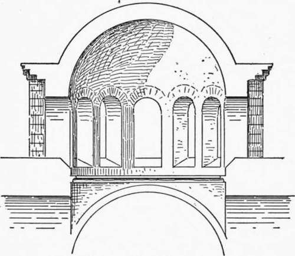
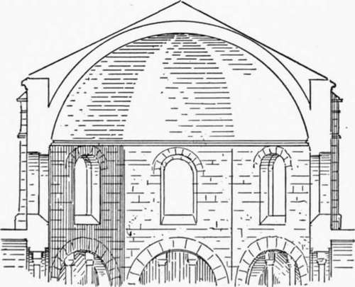
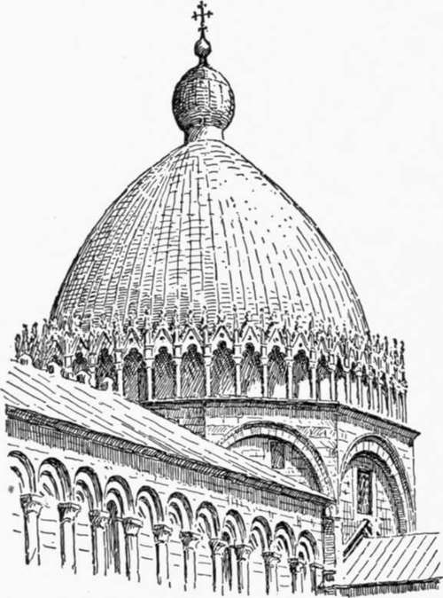
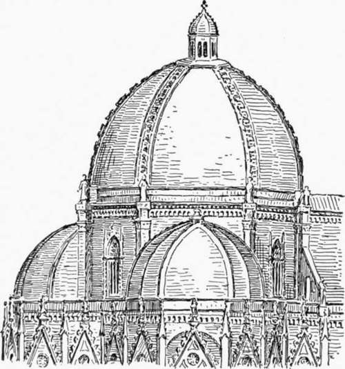
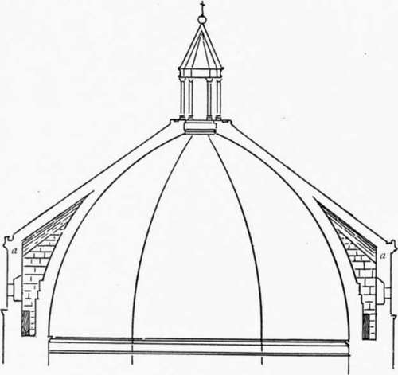
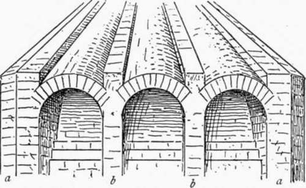

Chapter II. The Dome Of Florence
Description
This section is from the book "Character Of Renaissance Architecture", by Charles Herbert Moore. Also available from Amazon: Character of Renaissance Architecture.
Chapter II. The Dome Of Florence
The great dome of the cathedral of Florence marks the beginning of the Renaissance movement in architecture, though in its general form and structural character it has no likeness to ancient domes, and has few details drawn from the Roman classic source. It exhibits a wide departure from any previous forms of dome construction, and is an expression of the creative genius of a remarkably gifted man of great independence, working under inspiration drawn in part from ancient sources, in part from mediaeval building traditions, and in still larger part from the new motives that were beginning to animate the artistic ambitions of the fifteenth century.
The dome of the Pantheon and the dome of St. Sophia, the two greatest domes of former times, had been built on principles that did not admit of much external effect, and the numerous smaller ones of the Middle Ages, in western Europe, had been equally inconspicuous externally, if not entirely hidden from view, in consequence of rising from within a drum which reached far above the springing level. In most cases the whole construction was covered with a timber roof, so that from the outside the existence of a dome would not be suspected. This was a secure mode of construction, and one that for stability could not be improved; but it did not give the imposing external effect that Brunelleschi sought.
Attempts to make the dome a conspicuous external feature had indeed been made before Brunelleschi's time. The later Byzantine builders had raised small domes on drums resting on pendentives, and rising above the main roof of the building, but they had still carried these drums up somewhat above the springing of the dome, and had further fortified them with buttresses built over the supporting piers, as in Hagia Theotokos of Constantinople (Fig. I). Thus in such designs the dome of western Europe is that of Aachen (Fig. 2). In this case the drum is carried up far beyond the springing, and is covered still remains partly hidden from view, the drum being the most conspicuous part of the composition. Among the early domes with a timber roof which completely hides the dome from external view. The same adjustment of the dome to its drum is, with minor variations of form (the dome being in some cases polygonal on plan, as at Aachen, and in some cases hemispherical) found in most other mediaeval domes, and the timber roof over all is likewise common. But in a few cases a different scheme was adopted in which the dome is set on the top of the drum instead of within it. In such cases, however, the drum is low, not rising above the ridge of the timber roof of the nave, and the dome, being unprovided with abutment, is insecure except in so far as it may have a form that is self-sustaining as to thrusts (which removes it from the true dome shape), or may be secured by some kind of binding chain.1 An example of such a dome occurs on a small scale over the crossing of the cathedral of Pisa (Fig. 3). This dome is not hemispherical, its sides rise steeply, and with such moderate curvature as to render it measurably self-sustaining as to thrust.1 Another instance of a similar scheme, and on a larger scale, is that which appears to have formed a part of Arnolfo's design for the cathedral of Florence. This dome was never executed, and our knowledge of it is derived from the well-known fresco in the Spanish chapel of Santa Maria Novella.2 Here both the dome and the drum are octagonal in conformity with the plan of the part of the building which it covers. The outline (Fig. 4) is slightly pointed, but the sides are nevertheless so much curved in elevation that a structure of this form would not stand without strong cinctures. It is, however, not unlikely that the fresco painter has given it a more bulging shape than Arnolfo intended. But domes of this character were exceptional in the Middle Ages. The builders of that epoch confined their practice for the most part to the safer form in which the vault is made to spring from within the drum, and is thus necessarily, either in part or entirely, hidden from external view.
Fig. 1. — Hagia Theotokos.
Fig. 2. — Aachen.
Fig. 3. — Dome of Pisa.
1 The elevated domes of Arabian architecture are in many cases constructed of wood and stucco. When of masonry they are, I believe, either weighted within where the thrusts fall, or are bound with chains.
Fig. 4. — Dome of Arnolfo.
1 i have not examined the dome of Pisa closely on the spot, but i suppose it is bound with a chain, as we know was the custom at a later time. Cf. Fontana, vol. 2, P- 363
2 There can be little doubt that the dome represented in this fresco embodies the original project of Arnolfo, though this has been questioned. Cf. Guasti, Santa Maria del Fiore, etc., Florence, 1887, pp. lx-lxi.
A remarkable dome of this latter class is that of the Baptistery of Florence, which, though the building has undergone various superficial transformations since its original construction at an early, though uncertain, epoch, has come down to us in essential integrity. This building on plan is in the form of an octagon, and the dome is of corresponding shape, and sprung from a level far below the top of the enclosing walls. In ele vation the dome (Fig. 5) has a pointed outline, and is covered by a pyramidal roof of stone the upper part of which is incorporated with the dome itself, while beneath the lower portion is a void between the dome and the enclosing wall. The structure has an internal anatomy that is both ingenious and admirable. The span is about 25 metres, and the wall at the level of the springing is over 3 metres thick. Above this the wall (a, Fig. 5) rises to a height of about 8 metres. The dome at its base is about 1 metre thick, and its extrados rises vertically to a height of about 2 1/2 metres, leaving an open space between it and the wall of the enclosing drum of 1.26 metres in width. Above this vertical portion the extrados is stepped by several courses of masonry, somewhat after the manner of the dome of the Pantheon. From the reentrant angles of the octagon (a, Fig. 6) solid abutments are built up against the salient angles of the vault, and, between these, two secondary abutments (b)a.re carried up against each of its sides. These buttresses are in the form of cross walls dividing the space on each side of the octagon into three compartments, and over each of these compartments a barrel vault, on an axis inclined in conformity with the slope of the roof, is turned. The upper ends of these vaults intersect on the surface of the dome, as shown in Figures 5 and 6. The voids between the crowns of these vaults and the buttresses are filled in with masonry so as to form the sloping planes of the roof below where it is incorporated with the dome, and on these are laid the slabs that form the external covering. With such an effective buttress system as is here provided it is hard to find a reason for the chain of timbers which is inserted at the haunch of the dome. The constructive principle embodied in this monument is altogether sound,1 and its architectural character is in keeping with the construction.2
Fig. 5. — Section of Baptistery.
Fig. 6. — Dissection of the vault of the Baptistery.
Continue to: